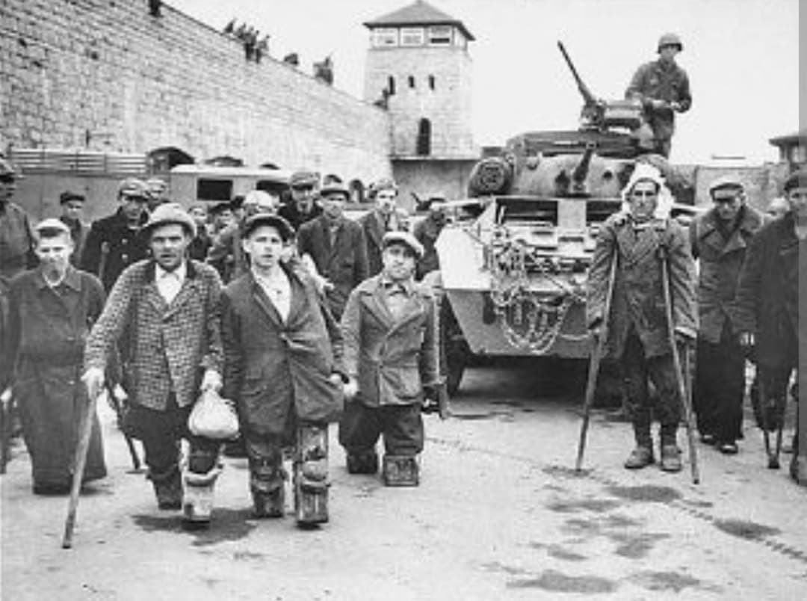
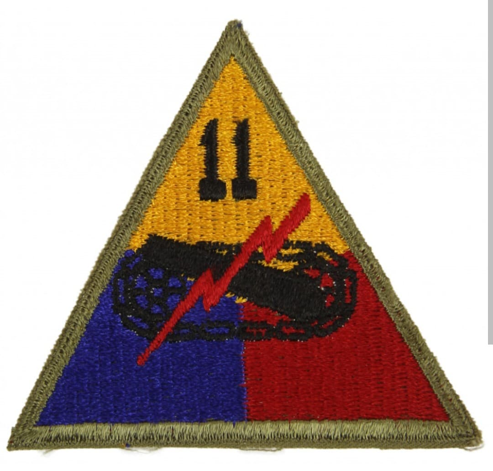
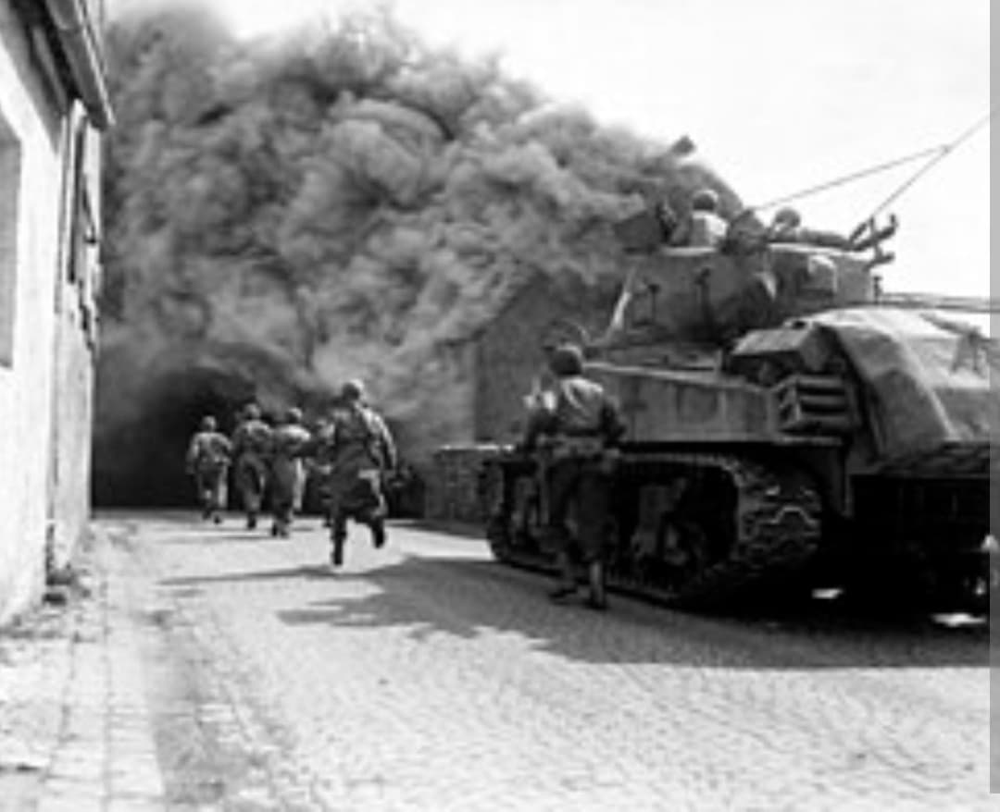

La division de la foudre : de l'enfer neigeux des Ardennes aux offensives finales en Allemagne

La 11th Armored Division (11e division blindée américaine), fièrement surnommée la « Thunderbolt Division » (La Division de la Foudre), est une unité mécanisée d'élite de l'US Army qui s'est illustrée de manière éclatante sur le théâtre européen durant la phase finale de la Seconde Guerre mondiale.
Débarquée sur le continent à l'hiver 1944, elle est immédiatement jetée dans la fournaise de la bataille des Ardennes, avant de participer activement aux offensives fulgurantes de la 3e armée du général Patton à travers l'Allemagne et jusqu'en Autriche.
Activée en août 1942 au Camp Polk en Louisiane sous les ordres du major général **Charles H. Kilburn**, la division a subi des entraînements rigoureux avant d'être engagée directement au front en décembre 1944.
Son insigne d'épaule distinctif arbore l'emblème de la foudre frappant à travers un bouclier, symbolisant la rapidité d'exécution, la puissance destructrice et la fulgurance des frappes blindées en territoire ennemi.

La 11th Armored fait ses débuts sur le front européen dans des conditions d'une extrême dureté, en plein cœur de la bataille des Ardennes. Jetée dans la mêlée pour repousser la contre-offensive de la Wehrmacht, elle s'accroche au terrain malgré le froid glacial et la neige, participant à des combats acharnés pour libérer des villages et briser l'étau ennemi.
Malgré son inexpérience initiale, la « Thunderbolt Division » démontre une combativité remarquable aux côtés des vétérans de la 3e armée.

Au début de l'année 1945, la division franchit la ligne Siegfried, traverse le Rhin et participe à l'effondrement des défenses allemandes en direction de la Sarre et du Rhin. Ses colonnes de chars avancent à un rythme effréné à travers l'Allemagne centrale.
Dans sa progression en avril 1945, la division joue également un rôle historique crucial en découvrant et en libérant plusieurs camps de concentration annexes, dont le terrible complexe de **Mauthausen-Gusen** en Autriche, apportant les premiers secours aux survivants.
La « Thunderbolt Division » a achevé la guerre en Autriche, faisant la jonction avec les forces soviétiques en mai 1945. Sa rapidité d'action et son efficacité lors des derniers mois du conflit en font l'une des unités mécanisées les plus redoutables de la fin de la guerre.
Page du Musée HOP WW2 – Section Unités & Divisions